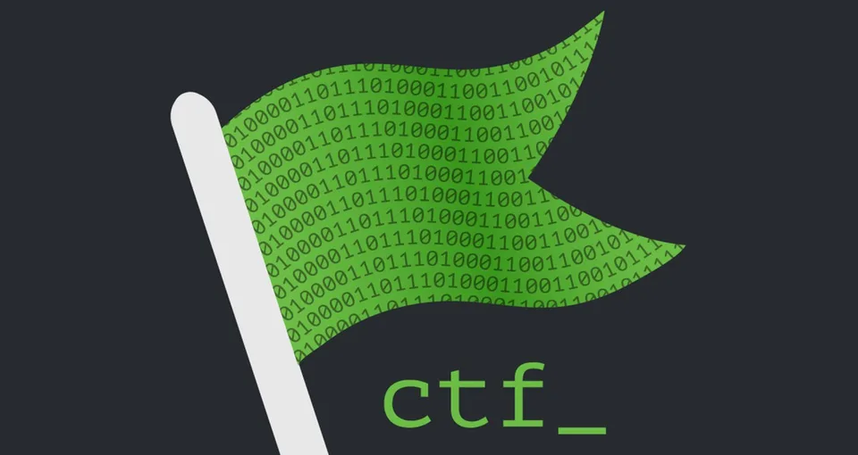
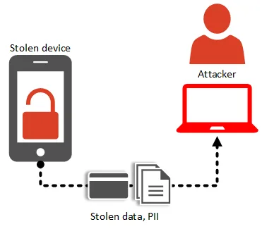
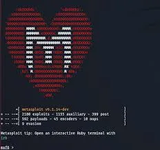
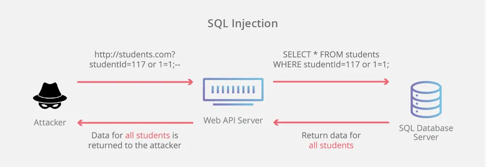

Capture the Flag
Practiced reconnaissance, vulnerability assessment, and exploitation in a controlled CTF lab environment.
Explore projectSecurity / Selected projects
Hands-on security learning through controlled labs and investigation.
← Back to featured workThe collection
Explore the original project files and notes on GitHub.

Practiced reconnaissance, vulnerability assessment, and exploitation in a controlled CTF lab environment.
Explore project
Explored a deliberately vulnerable web application through a series of security challenges.
Explore project
Used Kali Linux, Nmap, and Metasploit to investigate vulnerable services on a Metasploitable lab host.
Explore projectCompared dictionary attacks and password hashing approaches in a Linux lab environment.
Explore project
View the SQL injection project files and lab documentation on GitHub.
Explore project